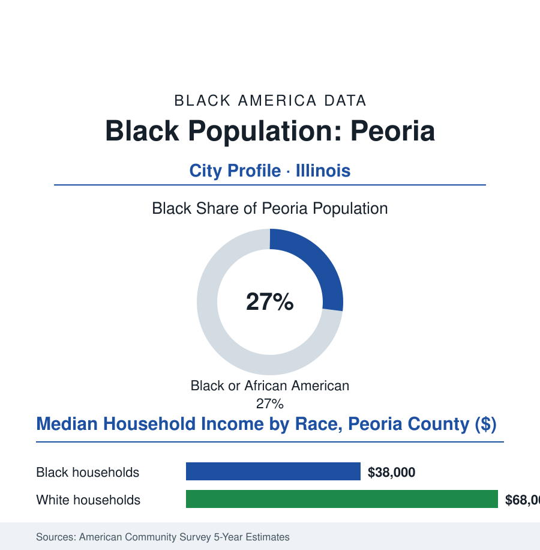

Black Cities
Black Peoria: 30,000 People in the River City That Tests America
Peoria is the town American culture uses as its test audience — and its Black community, built by the river trade and the factory, has been answering back for two centuries.

Peoria's Black community numbers roughly 30,000 people — about 27% of the river city's 111,000 residents — in the Illinois town whose name became American shorthand for the national mainstream: 'Will it play in Peoria?' Its Black community has been playing there since the fur-trade era, through the distillery age, the factory age, and the long headquarters twilight. This article reads Peoria's numbers.
Whiskey, Tractors, and the South Side
The founding economy was liquid: Peoria's distilleries made it the whiskey capital of the nineteenth-century world, and Black workers — in the cooperages, the barges, the bottling houses, and the domestic service of the distillers' High Street mansions — formed one of downstate Illinois' earliest urban Black communities, its churches and its abolitionist-era networks documented in the county record (the city's role in the Lincoln-Douglas geography of the 1850s placing it inside the era's central argument, with a Black community living at its address). The twentieth century traded whiskey for earthmoving: Caterpillar's rise made Peoria a company town of the classic pattern, and its unionized wages — the UAW locals of the East Peoria plants — built the Black industrial middle class of the postwar decades in the public pattern of the union file (the migration chains from Mississippi and Arkansas filling the South Side and the near North Side, the neighborhoods' institutions complete by the 1950s: the churches, the Carver community center, the Black business rows along the avenues). The era also produced the city's most famous son, whose biography is the community's in miniature: Richard Pryor, raised in his grandmother's Peoria brothel in the record's plain telling, his childhood geography — the South Side's whole economy of factory shifts and after-hours rooms — becoming, transmuted, the raw material of the century's most influential comedy, the hometown now marking the ground with a statue the tourism file counts among its assets. The desegregation chapters ran through the schools and the housing authority in the standard order, slower than the law and documented in the district's files.
The Headquarters' Long Twilight
The modern data describe the Rust Belt's smaller-city edition with a corporate twist: Caterpillar's headquarters departure for the suburbs and then Texas in the last decade removed the executive tier while the plants and the engineering center remained — the workforce data showing the peculiar result, a town that kept much of the factory and lost the corner offices, its Black community's employment re-sorting toward the medical district (the teaching hospital and the medical school making healthcare the South Side's largest ladder, in the health-workforce file's pattern) and the logistics of the river-rail-highway junction. The household rows mark the strain in the survey cuts: a Black median in the high thirty-thousands in the county data — among the wider racial spreads in this atlas's Illinois pages — the poverty map concentrated south of the bluffs, the population drifting down with the region's. The civic shelf answers in the established forms: the school district's equity plans, the community's church and fraternity infrastructure, Bradley University's town-gown programs, the South Side's corridor plans with the land bank working the vacancy rows, and the culture file's distinct entry — a blues and jazz lineage on the river circuit, the Black music venues of the levee era preserved in the historical society's exhibits, Pryor's statue presiding over a downtown learning, like the industry before it, to sell the hometown's own story. The forward data are a smaller industrial city's honest set: healthcare's growth, the river's logistics, the remote-work era's cost-of-living pitch — and a Black community of thirty thousand whose ancestors tested, in every sense of the phrase, whether it would play.
Reading Peoria's Numbers
Thirty thousand people in the test-market town: Peoria's Black file is the atlas's downstate river chapter — whiskey to tractors to hospital wards, one workforce re-sorted by three economies without leaving the bluffs. The census counts the residents. The phrase the nation made of the town gets its answer, as it always has, from the South Side first. It played. It plays still — in the key the census cannot hear, which is the only key that ever mattered downtown.
More in Black Cities
Black Atlanta: Population, Distribution, and Growth of a Black Metropolis
Metro Atlanta holds more than two million Black residents — roughly one in three, second only to New York. The suburban distribution, migration history, and composition of Black Atlanta in the census data.
Black New York: The Largest Black Population in America
The New York metropolitan area holds about 3.4 million Black residents — more than any metro in the nation — and the city itself about two million. The census profile.
Black Washington: The District and the Metro
The Washington metro holds about 1.6 million Black residents, and the District itself — long a majority-Black city — now records a Black share near 41 percent. The census profile.
Source: U.S. Census Bureau, 2020 Census and American Community Survey 5-year estimates; City of Peoria and Peoria County; Bradley University and Peoria historical societies.